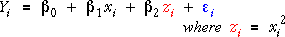

Linear and nonlinear models
If there is nonlinearity in the relationship between Y and x, so that the normal linear model with a single explanatory variable,

does not fit, we might try a model with a transformed explanatory variable or response, such as

In terms of the response variable y* = log(y), this is still a 'linear model' — it describes a linear relationship between y* and x . The parameters can be estimated and tested in the same way.
The important characteristic of a simple linear model is not that it is linear in the original explanatory variables, but that:
A simple linear model is linear in the parameters.
Quadratic models
An alternative way to model curvature in the relationship between Y and x is to add a quadratic term to the model,

Although this initially seems to be a different type of model from ordinary linear regression models, it can also be written as a linear model with two explanatory variables,

The model is therefore linear if we treat x2 as a second 'explanatory variable'.
The quadratic model is a general linear model because it is linear in the parameters.
The only difference from ordinary linear models with two explanatory variables is that the two explanatory variables are related quadratically. However since we treat the explanatory variables as constants, this does not affect how the model is fitted or used.